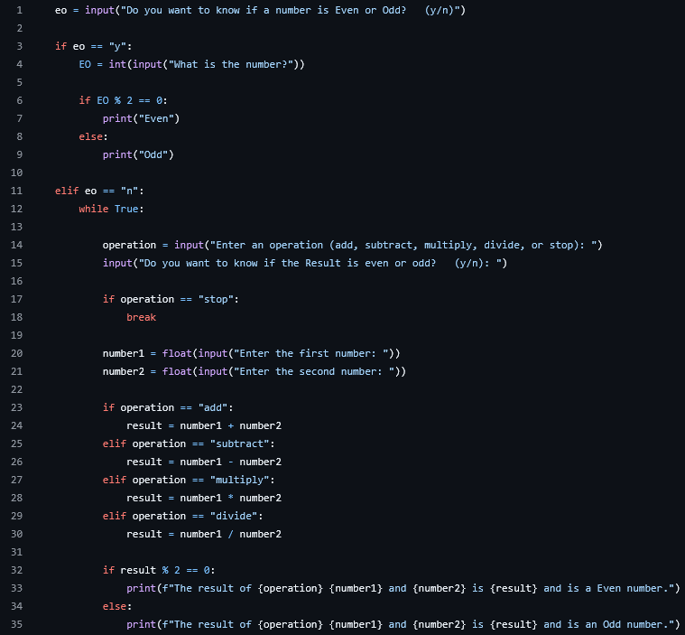
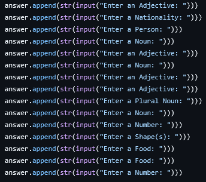
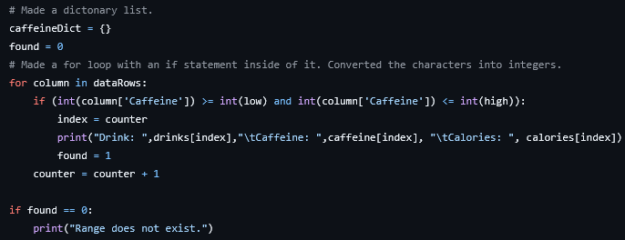
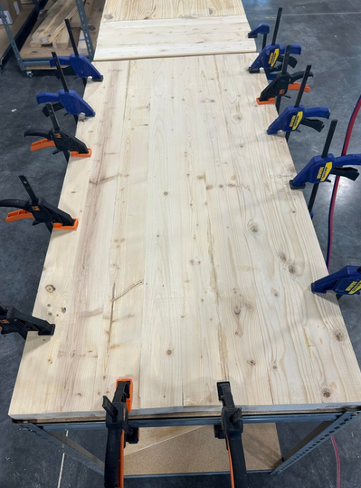
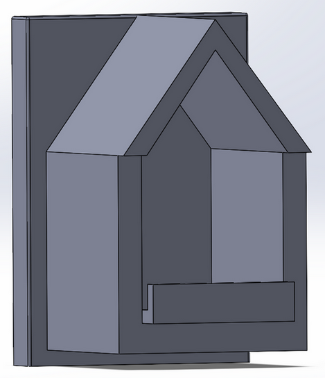
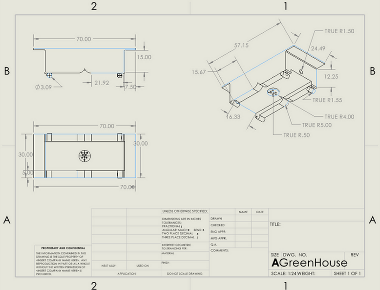
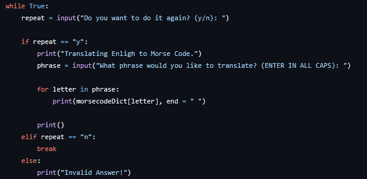
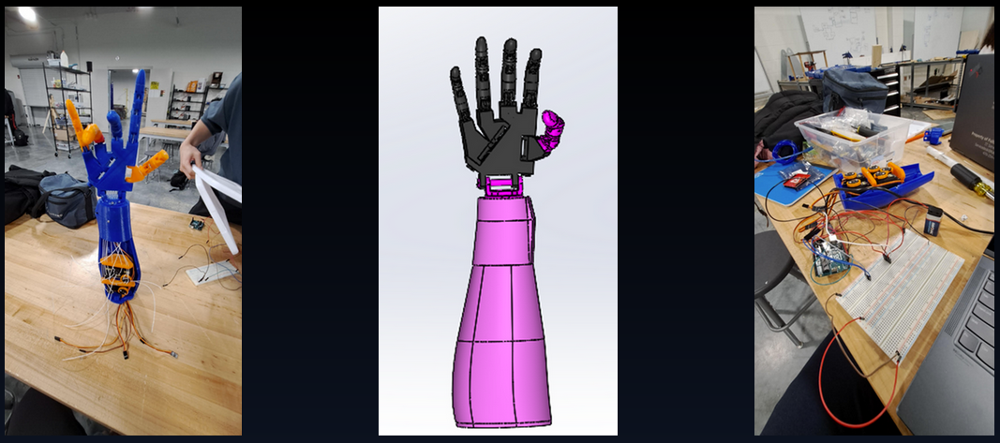
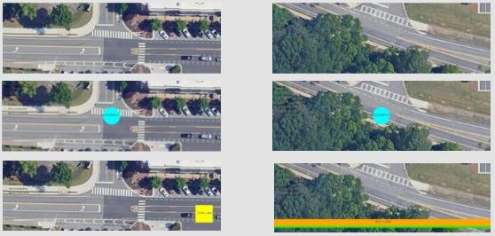
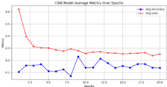

I'm Basically the 21st Centurys Iron Man
EMG prosthetic hands, AI traffic optimization, CAD wizardry, and a relentless drive to build the future — here's why the Iron Man comparison isn't just hype...

A Python program that determines if a number is even or odd using the modulo operator.

An interactive Python game that creates funny stories based on user input.

A Python tool that filters drinks based on caffeine content, with data from Excel.

CAD design and engineering of a dinner table using SolidWorks.

Woodworking project combining craftsmanship with engineering principles.

Specially designed bird house for Northern Cardinals using CAD and SolidWorks.

Portable greenhouse design combining woodworking, CAD, and team leadership.

A Python program that converts English text into Morse code.

EMG-powered prosthetic hand using MyoWare sensor to control servos. Inspired by amputees.This project was inspired by amputees. People should not be limited to the functionality of their limbs. We built an EMG-powered prosthetic hand using a MyoWare sensor to control servos for hand motion.
How can engineering improve modern healthcare?
We can create robotic helpers that follow gestures for lab safety, and prosthetic designs that give users better control and feedback.

How can AI optimize traffic flow and safety at Innovation Academy during peak hours?
The research aims to design machine learning models to analyze traffic data and predict congestion. A dynamic, AI-driven system can reduce wait times and improve pedestrian safety by adjusting signals and providing routing suggestions during peak times.


I’m a high school senior at Innovation Academy with a strong focus on computer science, engineering, and AI. I build real-world projects that combine software, hardware, and design — from EMG-powered prosthetics and AI traffic systems to web apps, CAD models, and embedded systems. I’m passionate about using technology to solve meaningful problems and create tools that actually help people.
Enrolled in IA.
Became a second consecutive champion winner. Won Leadership & MVP award.
Created a logo design for the Fulton County Schools Technology Logo Competition and placed top 10.
Introduced to Arduinos and machines. Created CAD projects and worked on the Arm project.
Learned Python and developed multiple projects.
Became a soccer referee for a year.
Focused on AI research and hands-on projects. Received awards in project-based learning and prototyping, and presented at a fundraiser event.
Built wood & metal projects and learned new shop machines.
Created Arduino projects including a boxing trainer.
The arm went to a Georgia Tech lab through a group member's internship.
Interned at KC Medical Care assisting with troubleshooting, research, and marketing.
Enrolled as a Dual Enrollment student at Gwinnett Technical College.
Offered a position as a Strategy Enablement Analyst at VDART. Projects include but not limited to: Marketing Academy, AI Chatbots across websites, AI Content Automation, App development, Agentic AI and Application Design and Development.
Accepted at Kennesaw State University (KSU) and will attend as a freshman during the 2026 fall semester.
Was invited to join the National Society of High School Scholars (NSHSS) for academic excellence.
Placed on the Honor Roll for maintaining a high GPA throughout high school.
Obtained a part-time position at Office Depot OfficeMax.

A clean, modern portfolio design with smooth animations and responsive layout. Custom made for Abdulmoiz Hussaini.
A sleek analog clock with a dark theme, smooth animations, and real-time updates.
View on CodePenA clean, light-themed analog clock with elegant design and smooth second hand movement.
View on CodePenA Matrix-inspired hacker screensaver with falling characters and green color scheme.
View on CodePenA minimalist digital clock with light theme and clean typography.
View on CodePenA browser-based terminal simulation with command functionality and retro styling.
View on CodePenA simple online text editor with basic formatting options and dark theme.
View on CodePenMy submission for the July 2023 CodePen monthly challenge with creative coding elements.
View on CodePenEMG prosthetic hands, AI traffic optimization, CAD wizardry, and a relentless drive to build the future — here's why the Iron Man comparison isn't just hype...
Y'all should connect with me btw...
What should I do...?
Enter a valid code to unlock a destination